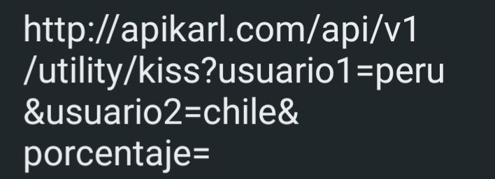
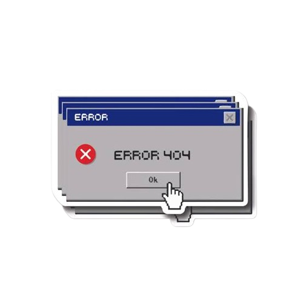

🔑 Autenticación
Para acceder a la API, necesitas una API Key. Puedes solicitarla desde nuestro panel de control.
Las API Keys son necesarias para garantizar que solo usuarios autorizados puedan acceder a las funciones avanzadas de la API.
Si intentas acceder sin una API Key válida, recibirás un error 401 Unauthorized.
🔹 Endpoints
La API Karl ofrece múltiples endpoints para mejorar la funcionalidad de los bots en Discord.
Cada endpoint proporciona respuestas rápidas y optimizadas para diferentes necesidades, incluyendo:
- /api/memes – Devuelve imágenes de memes.
- /api/chistes – Devuelve chistes aleatorios.
- /api/moderacion – Herramientas de moderación para Discord.
- /api/informacion – Devuelve datos útiles sobre servidores y usuarios.

❌ Manejo de errores
La API devuelve códigos de error para ayudar a los desarrolladores a diagnosticar problemas:
- 400 – Solicitud incorrecta. Puede ser un parámetro mal escrito.
- 401 – API Key inválida o faltante.
- 403 – No tienes permisos para acceder a este recurso.
- 404 – El endpoint solicitado no existe.
- 500 – Error interno del servidor.
Si recibes errores constantes, revisa la documentación para asegurarte de que estás enviando los parámetros correctos.
